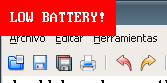
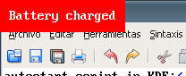

Battery monitoring program for Linux
© 2006 Ricardo Garcia Gonzalez
battery_monitor is a small battery monitoring program for Linux, that you can run in the background from your desktop session or launch from the boot scripts. It is designed with simple goals in mind and provides acoustic and/or visual alerts when your battery level is low or when it is fully charged, so you can take apropiate actions.
Latest version is 0.5 and it can be downloaded from here: battery_monitor-0.5.tar.bz2. It is licensed under the MIT License.
To compile and install battery_monitor you need several components installed on your computer:
To compile the program, once you have installed everything needed, run make from the source code directory. To install it, run make install after compilation. This last step may require superuser privileges depending on the selected installation directory. The following parameters may be useful while compiling and installing:
Compilation and installation parameters are appended to the make command in variable assignment form. For example: make install PREFIX=/usr DESTDIR=/tmp/fake_rootdir.
The program requires a handful of parameters to be run. If any parameter is missing, it will print usage instructions to standard output.
The first 3 arguments are WAV files to be played when a low battery level has been detected, when the shutdown process has been launched and when the shutdown process has been cancelled, respectively. For reference, you may like the sounds I use, which are WAVs extracted from the following KDE sounds (you can probably get the original files from packages in your distribution or from the KDE Subversion repository): KDE_Beep_Double.ogg, KDE_Window_Iconify.wav and KDE_Window_DeIconify.wav.
Then, the program needs a font name to be used to display the visual warnings under X. It's worth mentioning that it needs the name in the traditional format, as displayed by the xfontsel tool, for example. Warnings are displayed with red background and white foreground, and bold fonts are generally more readable.
The last argument provides a way of calling the shutdown command. Note that it must be the shutdown command and not halt nor reboot. After the program detects battery levels are very low, and after some safety time, it will trigger a shutdown process to halt the machine in two minutes. For this, it will call shutdown. When you run the program as root from the init scripts, this won't be a problem and you only have to use /sbin/shutdown. However, if you run the program in your X session (as I do) and as a non-root user, chances are you won't be able to call /sbin/shutdown directly. You must then provide a way to call shutdown from that user account without needing user input. You could set the SUID bit in the shutdown program. Whether that's safe or not is up to you. I configured sudo myself and run the program with the following autostart script in KDE:
#!/bin/sh exec /home/rg3/bin/battery_monitor \ /home/rg3/Documentos/audio/bm/lowbat.wav \ /home/rg3/Documentos/audio/bm/startsd.wav \ /home/rg3/Documentos/audio/bm/stopsd.wav \ '-*-console-*-*-*-*-16-*-*-*-*-*-iso10646-1' \ '/usr/bin/sudo /sbin/shutdown'
You can use it as a template. Pay attention to the use of quotes to group words and avoid unfortunate shell expansion attempts.
Optionally, you can specify the number of seconds between checks as an additional argument at the end. It must be an integer between 1 and 86400. Finally, a couple of screenshots showing the program in action:


In this last section I will try to explain how the program works internally and give you some information about why I decided to make it this way.
The first thing you may want to know is What's the program going to do once I get it to run? By default, it's going to check the battery status each 20 seconds. The battery status information is gathered from the files in the /proc/acpi/battery/BAT1 directory. If it detects that the battery is fully charged, it will display a sign saying so. The sign will disappear when, in the next check, it will see that the battery is discharging. So, basically, when I see the sign I unplug the AC adapter from the back of my laptop and the sign disappears some seconds later.
When the battery is discharging, capacity may drop below the low capacity limit of the battery. When this happens, it means there are only some minutes of power left. In my laptop, around five. A sign warning of low battery will be displayed and, with each check, the program will try to play the sound you chose for low battery warnings. This behaviour may remind you of what many cellular phones do. After about 1 minute of warnings, it will call shutdown to halt the system gracefully in 2 minutes. When it calls shutdown it plays the sound you chose for "shutdown starting".
This situation may be reverted once you plug the AC adapter in and it starts charging again. In the next check, the sign will be removed, sounds will stop and the shutdown process will be cancelled.
One of the first things people usually ask me when I mention them this program is: Why [the hell] do you use the xine library? Well, you should know by now that the program plays sounds to get your attention. Playing sounds from a program may be a difficult task, especially for such a simple program like this one, and you have to solve several problems. First off, you must know how to read the contents of WAV or MP3 files and extract the audio data from them. Then, you have to choose how to output that sound. You could choose to play it through ESD, arts, OSS, ALSA or whatever. With the xine library, you don't have to care (from the programmer point of view) about any of this problems. You simply tell the library to play the sound, and it plays it! It provides a very convenient level of abstraction, and the API is easy and stable enough.
Many people use the xine library as their backend for amaroK, a KDE audio player. By using it, amaroK can play many file formats easily. Furthermore, the xine library is configured by itself. You can select the output device, if you want to use ALSA or OSS, and all programs that use it may change their behaviour without any further changes. You can set up the ALSA dmix plugin, for example, to be able to play several sounds at the same time, and tell the xine library to use it. All programs will benefit from this central configuration change. So, all in all, while I do not use the xine media player itself to play my media files, I use the xine library in several programs because it's very convenient. And, here, it helps me reducing the number of lines of code.
Finally, some people asked me if the program displayed the remaining battery time or charge percentage. No, the program does not display that information. When I began using the KDE battery monitor and/or gkrellm, I saw they lacked the precision I wanted. Estimating battery minutes remaining and charge percentage is tricky, especially the former. All you know is how much capacity is left and the rate you're using power at, now. You may, for example, look at the remaining time and think you still have 30 minutes left. But then, you start playing a game or browsing websites with a lot of animations and flash content and, 10 minutes later, you are on low battery. What? I thought I had 20 more minutes. Well, you may have had 20 more minutes if your power use rate had stayed the same, but it increased.
Similar problems arise with charge percentage while charging (while discharging, it's more reliable). How do those programs estimate the charging percentage while charging? They look at the maximum capacity achieved the last time the battery was fully charged. By the time your current capacity reaches that number, they will display 100%. Does this mean that the battery is fully charged? No. You may have charged 4023 mAh the last time, but you may charge 4136 mAh this time. It can happens normally. Furthermore, there are batteries in which the power decreases linearly and other ones in which it decreases exponentially. In fact, gkrellm lets you tune those parameters, proving it's not easy.
When I wrote this program, I wanted to optimize battery usage. I don't want to buy a new battery, so I try to preserve the one I have, and to do so I want to know when the battery is fully charged and when the battery is really low, and I wrote this program to give me first hand, reliable information. Granted, having an estimated charge percentage or an estimated number of minutes left is very user-friendly. However, I want to know when I should plug or unplug the AC adapter. If possible, the program had to be independent of the sound system and the X environment, so I designed it with those goals in mind. I think I achieved those goals, and I now use the program daily.
I hope you find it useful. Thanks for your interest in battery_monitor!